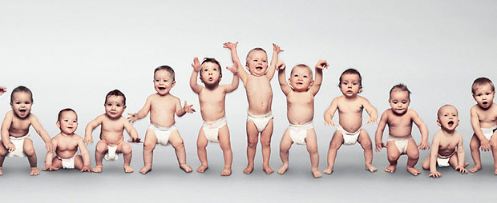

我很久没有写博客了，一直在设计制作新版的博客，就是现在所看到的这款。我的性格总是喜欢把一件事落实得差不多了，才能把心思抽出来想别的，干别的。不喜欢同一时间想着很多件事，所以只有博客差不多改好了，我才愿意坐下来写写日志。这次改版比上次进步很多，我基本能搞懂Wordpress里面的那些Tag的调用了，自己好像经常都是后知后觉，现在看着这些都不难，当年怎么就看不懂呢。 在改版的这段时间里，我看到网上关于博客将死的一些议论，大家都未来技术的展望。博客风风火火的日子的确开始慢慢过去了，在这个潮流下，我还花那么多时间精力去改版似乎划不过来。我思考过我们写博客的目的到底是什么。我知道很多人开博客是为了让自己发出更大的声音，希望更多的人听到或关注到。但我们似乎不是，虽然曾经也会投人们所好去转载一些内容，或是影响自己写日志的方式和语气。
有时候翻看好几年前，博客还没那么火的时候，自己在Space上写的日志，会很满足于当时的那种心态。基本都是半夜，自己写给自己的像是日记的东西。也没想过有没有人看，有没有人喜欢。我想对于这样一种心态和行为，博客已死的论题似乎没有什么意义。新版博客的设计，我把很多五花八门的功能都去了，不需要什么社会网络服务，不需要什么互动起来。这样做出来和我们内心想要的东西更加相配。 我想这次应该是最后一次大改了，我希望更多的时间是让自己享受写博客的这个过程。并且心中一直还有个事没做，总是牵挂着放不下，那就是我们的网站。很多人认为博客就可以相当于网站了，不过我这个古老的思想还是把这两者分得很开，我还是要做一个自己满意的网站。 还有我的FLASH，很久没学了，是该把时间转过来了。我的FLASH一直都是半桶水的水平，并且我现在工作的内容和它没什么关系，为什么还要坚持学呢？我想现在很多的学习，都是为了一种回报，比如找到更好的工作，有更好的报酬。但FLASH对我来说，它不属于以上情况，是我真正喜欢的一个事情。我想不是做什么事都考虑回报才行的，应该经常问问自己，到底自己有什么真正喜欢的，有没有为之努力过。也许很久以后我的FLASH还是一般，不过没什么亏的。
之前我听说过一个老外50多岁的女人，在网上找人学习FLASH的故事，这个事情如何去解释呢？在这个基本都是利益驱动行为的社会，还真有些事不是利益关系所能解释的，听起来好像非常的理想主义。但愿今后我们能更明确生活的方向，跟随自己的内心。 博客改版是自己喜欢做的事情；改版完成后，更多的时间，也还是应该用于自己真正喜欢的事情上 ：）